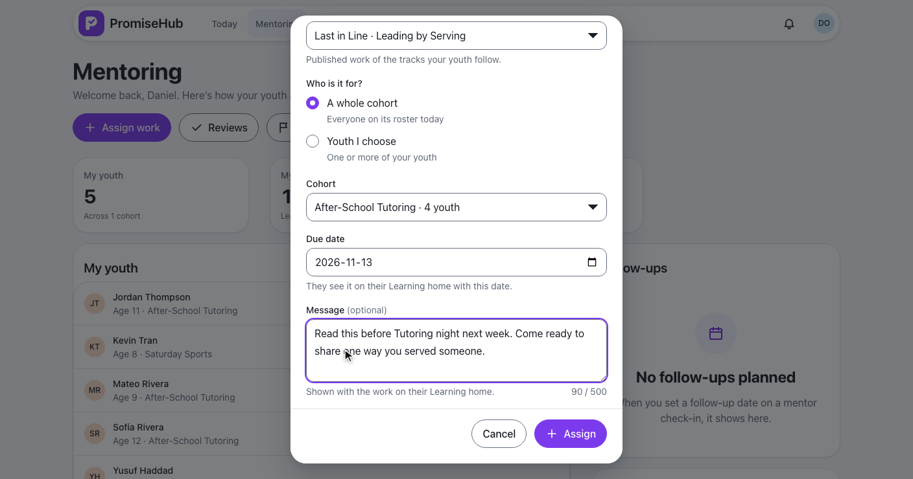
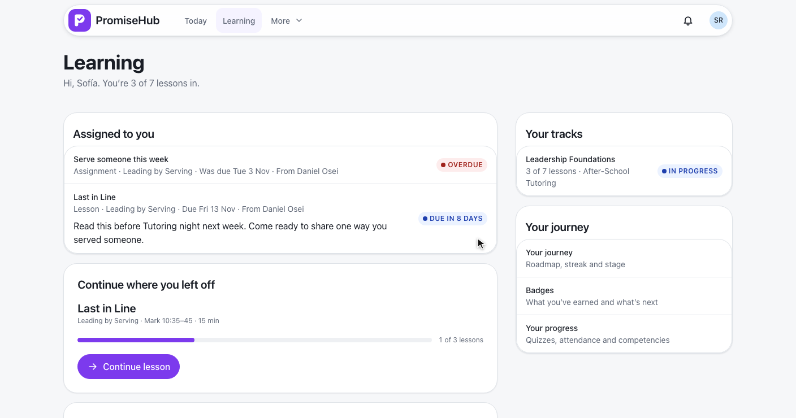
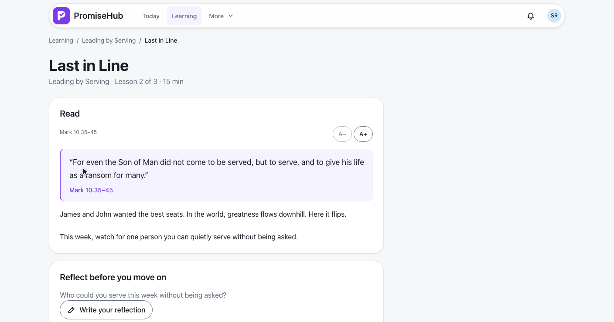
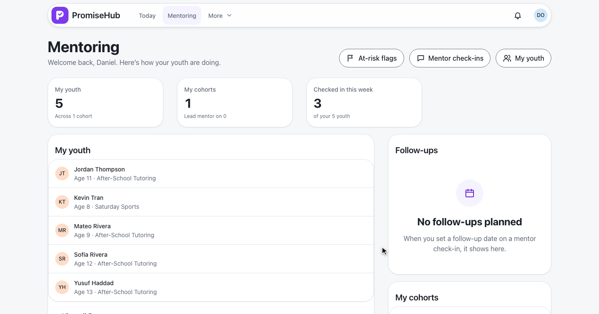
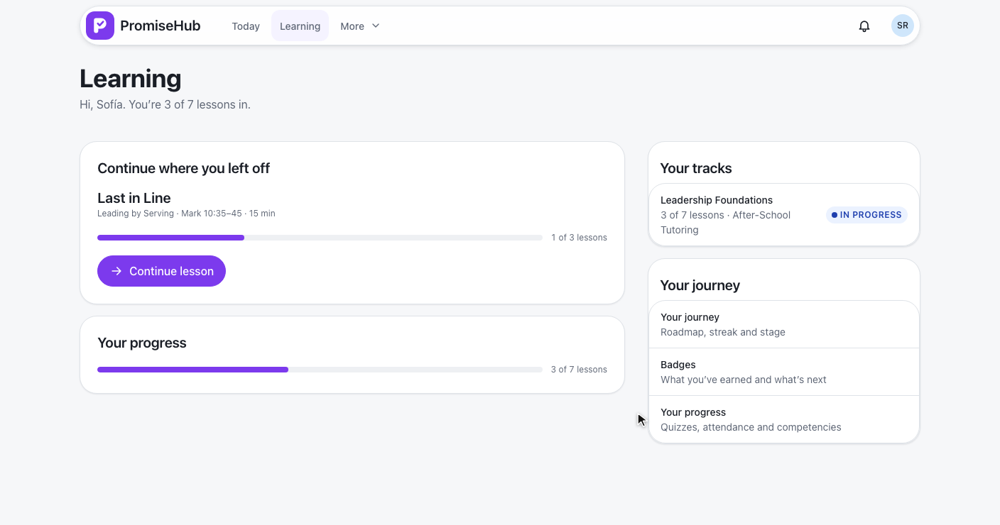

PromiseHub · Video 69
Assign work
A lesson, quiz or assignment for chosen youth or a whole cohort, due by a date
A lesson, quiz or assignment for chosen youth or a whole cohort, due by a date
Last in Line for After-School Tutoring, due Fri 13 Nov.


The quiz for Mateo and Yusuf, who is at risk.
| Field | Rule |
|---|---|
| Item | A published lesson, quiz or assignment of a track his youth follow |
| Who | Chosen youth in his scope, or one cohort he is on |
| Due date | Required, not in the past |
| Message | Optional, up to 500 characters |
| Track | Every youth follows the item’s track (422 names who) |
| Audit | Created once, with the kind, count and due date; never the message |
GET /mentoring/assign-work · POST /mentoring/assigned-work · L2-092 · ADR 0063
Soonest due first; it opens the lesson.


| Caller | Answer |
|---|---|
| Daniel, a mentor | His youth and his cohorts |
| A youth or cohort outside his scope | 403, audited |
| Admins, program directors, other staff, guardians, youth | 403 |
| Another organization | 404 |
| Learning off | No Assign work; 404 |
| Mentoring off | 404; no Assigned to you; nothing deleted |


The dialog as a bottom sheet, then Sofía’s assigned work.
Invalid, outside the track, failed, error, nothing to assign.
AssignWorkTests: options, chosen youth, cohort, checks, track, again, audit, scope, roles, tenancy, modules offLearningAssignedWorkTests: her list, what drops off, only her own, Mentoring offassign-work.spec.ts and assigned-work.spec.ts on phone and laptop, with axe
Next: schedule sessions and RSVP